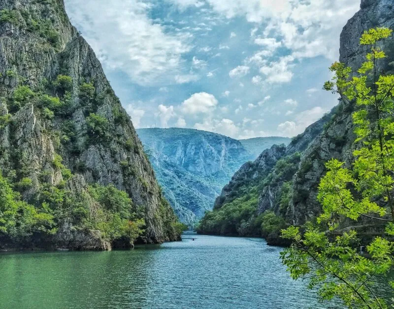

Градови
Во земјата официјално има 34 градови, кои според бројот на жители се класифицираат на три групи. Од нив, 5 се големи, 18 се средни и 11 мали градови или гратчиња. Ова е список на градови во Македонија, кои се подредени по азбучен ред, а дадени се и информации за бројот на населението според пописот во 2002 година и површината којашто ја зафаќа градот.

Планини
Македонија е главно планинска земја, со просечна надморска височина од 832 метри. Планините на територијата на државата може да се поделат во две групи: шарски планински венец (динарски венец) и осоговско-беласички планински венец (родопски венец). Планините во шарскиот планински венец се одликуваат по тоа што се млади, верижни, со остри врвови, а планините во осоговско-беласичкиот венец се стари, грамадни, со заоблени врвови.
 повеќеРеки
Според анализата,во Република Македонија има околу 1600 водотеци кои навистина може да се сметаат за такви, чија вкупна должина изнесува 11650км. Од нив, само 4 реки на територијатана Македонија се подолги од 100км и тоа Вардар, брегалница, црна и треска. Нивната вкупна должина изнесува 875км.